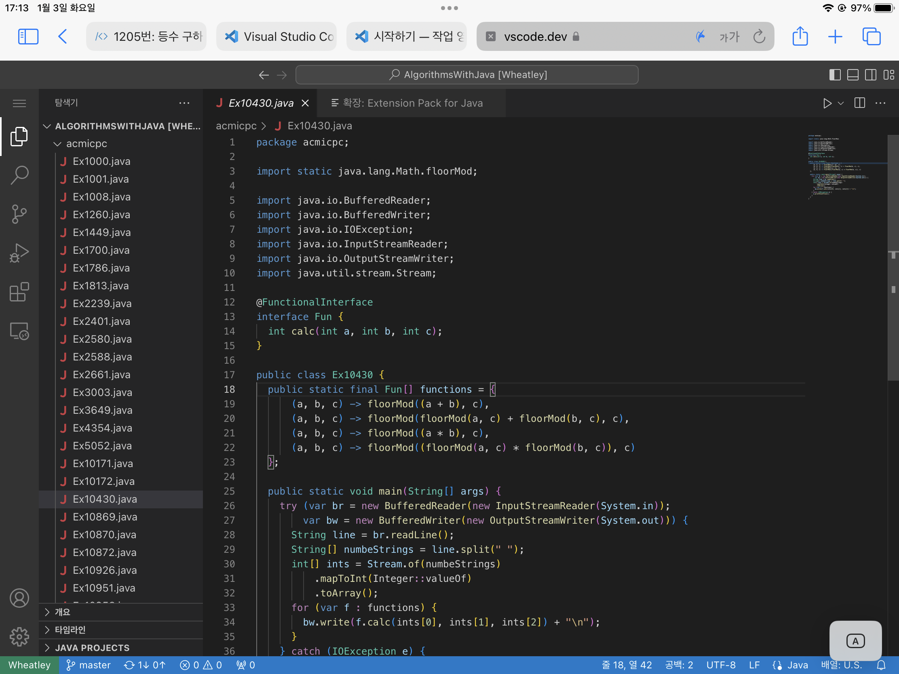

ssh into WSL2 & vs-code#
생성일: 2022년 3월 2일 오후 11:30
몇 가지 방법이 있다. 하나는 Windows 자체의 sshd 서비스를 사용하는 방법과 WSL 내부의 sshd 데몬으로 터널링 하는 방법이있다.
VSCode: how to ssh remote connect to remote WSL2
Windows 자체의 sshd를 사용해보자#
PC-A에서 PC-B의 윈도우로 ssh를 할 수 있는 명령어는 다음과 같다
# Powershell as Administrator
Add-WindowsCapability -Online -Name OpenSSH.Server~~~~0.0.1.0
Set-Service -Name sshd -StartupType 'Automatic'
이제 외부에서 해당 윈도우(PC-B)로 ssh를 연결해 들어가면 파워쉘 프롬프트를 만날 수 있다.
WSL로 자동입장이 되게 만들어보자#
아래 커맨드는 ssh 입장시 사용할 기본셸을 설정할 수 있다. bash.exe 파일로 설정해 놓았고, 이는 윈도우가 암시적으로 wsl을 호출하기 때문에 ssh를 통해 WSL 배시 셸로 들어가게 된다.
New-ItemProperty -Path "HKLM:\SOFTWARE\OpenSSH" -Name DefaultShell -Value "C:\WINDOWS\System32\bash.exe" -PropertyType String -Force
하지만 나는 욕심을 내어 파워셸까지 사용하고 싶었다. shutdown도 할 수 있게 말이다! 그래서 해당 프로퍼티를 다시 삭제했다.
Remove-ItemProperty -Path "HKLM:\SOFTWARE\OpenSSH" - Name DefaultShell
Problem shooting: WSL의 Microsoft Store 출시와 관한 문제#
Cannot run WSL2 over SSH on Windows 11
MS Store에 WSL이 올라왔기에 나는 판올림을 한 적이 있다. 그 뒤로 ssh 연결을 wsl로 할 수가 없었는데, 아직 해결되지 못한 이슈였다고 한다. 따라서 MS Store에 설치되어있던 WSL을 지우자 연결이 가능해졌다.
VS Code에 ssh로 원격접속하기#
Developing on Remote Machines using SSH and Visual Studio Code
하라는 대로 했는데도 안 된다. 그래서 심지어 vs-code도 삭제하고 vs-code-server도 전부 삭제해봤고 컴퓨터도 다시시작 했는데도 불구하고 연결이 안 되었다.
Vscode cannot connect to remote Linux （_WebSocket close with status code 1006）
그런데 이유를 모르겠지만 wsl --shutdown 을 사용해 리눅스를 종료시킨 뒤에 다시 켜니까 된다. 뭐지
Vs Code에 Remote Tunnel로 원격 접속하기#
ssh 연결 없이 깃허브 계정만으로 원격 vs-code 서버를 사용할 수 있는 개쩌는 기능이 언제모르게 출시했다. 웹으로도 연결이 가능해 아이패드로도 쉽게 데스크톱 자원을 사용할 수 있다.
사용해봤으나 치명적인 단점이 존재한다.
-
원격으로 컴퓨터를 켰을 때 vs-code가 실행이 된 상태가 아니므로 리모트 터널링이 안된다. ⇒ 물론 RDP로 들어가 임의로 실행시켜주면 가능하기는 하지만… 너무 번잡스럽잖아.
2023-03-13T17:53:04 수정:
code tunnel service install하면 된다. 앞으로 컴퓨터를 원격으로 켜기만 하면 ssh 연결 없이 바로 원격접속이 가능하다.
[수정] ssh로 연결된 상태에서 다음 명령어를 치면 remote tunnel을 열어준다!
code tunnel
*
* Visual Studio Code Server
*
* By using the software, you agree to
* the Visual Studio Code Server License Terms (https://aka.ms/vscode-server-license) and
* the Microsoft Privacy Statement (https://privacy.microsoft.com/en-US/privacystatement).
*
To grant access to the server, please log into https://github.com/login/device and use code AAAA-AAAA
친절한 설명서대로 해당 링크로 들어가 로그인을 하게 되면 cli 상에서 링크를 하나 더 준다. 그 링크를 타고 들어가면 본격적으로 웹에서 vs-code를 사용할 수 있게 된다.

{kind=link}
한 번 터널을 오픈한 상태에서 나는 어느 웹 브라우저로 들어가도 vscode.dev 사이트를 들어가 깃허브로 로그인 하기만 하면 언제든지 원격 접속을 할 수 있다. 개쩐다.
WSL2를 외부 SSH에 연결하기 위한 포트포워딩 자동화 Powershell script (scrap)#
WSLv2를 외부 SSH 연결하기 위한 포트포워딩 자동화 Powershell script
Windows에 ssh key 추가하기#
$env:ProgramData 또는 %ProgramData% 환경변수 안에 있는 ssh\administrators_authorized_keys 파일에 퍼블릭 키의 내용을 추가하여야 한다. $env:Home\ssh\authorized_keys를 수정한다고 적용이 되지 않아 고생했다.
그리고 키를 추가한 뒤로는 꼭 Restart-Service sshd를 사용하여 데몬을 재시작 해주어야 한다.
wsl에서 update.code.visualstudio.com에 접근할 수 없다는데?#
에러메시지를 요약하자면...
너 지금 update.code.visualstudio.com에 접근할 권한이 없으니까 vscode-server-linux-x64.tar.gz 파일을 다운받을 수 없어
code
Updating VS Code Server to version 6445d93c81ebe42c4cbd7a60712e0b17d9463e97
Removing previous installation...
Installing VS Code Server for x64 (6445d93c81ebe42c4cbd7a60712e0b17d9463e97)
Downloading: 100%
Failed
--2023-08-21 10:53:55-- https://update.code.visualstudio.com/commit:6445d93c81ebe42c4cbd7a60712e0b17d9463e97/server-linux-x64/stable
Resolving update.code.visualstudio.com (update.code.visualstudio.com)... 13.107.246.74, 13.107.213.74, 2620:1ec:bdf::74, ...
Connecting to update.code.visualstudio.com (update.code.visualstudio.com)|13.107.246.74|:443... connected.
ERROR: cannot verify update.code.visualstudio.com's certificate, issued by ‘CN=Microsoft Azure TLS Issuing CA 05,O=Microsoft Corporation,C=US’:
Unable to locally verify the issuer's authority.
To connect to update.code.visualstudio.com insecurely, use `--no-check-certificate'.
ERROR: Failed to download https://update.code.visualstudio.com/commit:6445d93c81ebe42c4cbd7a60712e0b17d9463e97/server-linux-x64/stable to /home/chltm/.vscode-server/bin/6445d93c81ebe42c4cbd7a60712e0b17d9463e97-1692582835.tar.gz
Please install missing certificates.
Debian/Ubuntu: sudo apt-get install ca-certificates
해결!!!!! 뿌와악!!! 아래 대화의 답변에서 해답이 있다. 결국은 파일을 직접 다운받을 수 없으니까 우리가 직접 꽂아넣어주면 되는 것이었다. 이때 중요한 건 $COMMIT_ID를 찾는 방법하고 다운받은 파일을 압축해제한 뒤에 --strip-components 1 옵션을 주어 바로 그 폴더에 담아야 하지 아무 옵션도 주지 않으면 폴더를 생성하여 그 안에 담아주므로 둘의 차이 그거 명심하자.
remote ssh in vscode on a target machine that only allows inbound ssh connections {sof}
물론 언젠간 저 ca-certificates 관련 문제가 다시 찾아올 것이고, vscode-server 업데이트가 막혀 같은 문제가 찾아오리란 사실은 변치 않을 것이다. 지금도 code 명령어를 치면 프로세스가 스폰되지 않고 에러메시지가 출력된다.
그래서 그냥 기본으로 깔려있던 wget을 지우고 brew를 사용하여 최신버전을 설치하니 문제가 해결되었다!